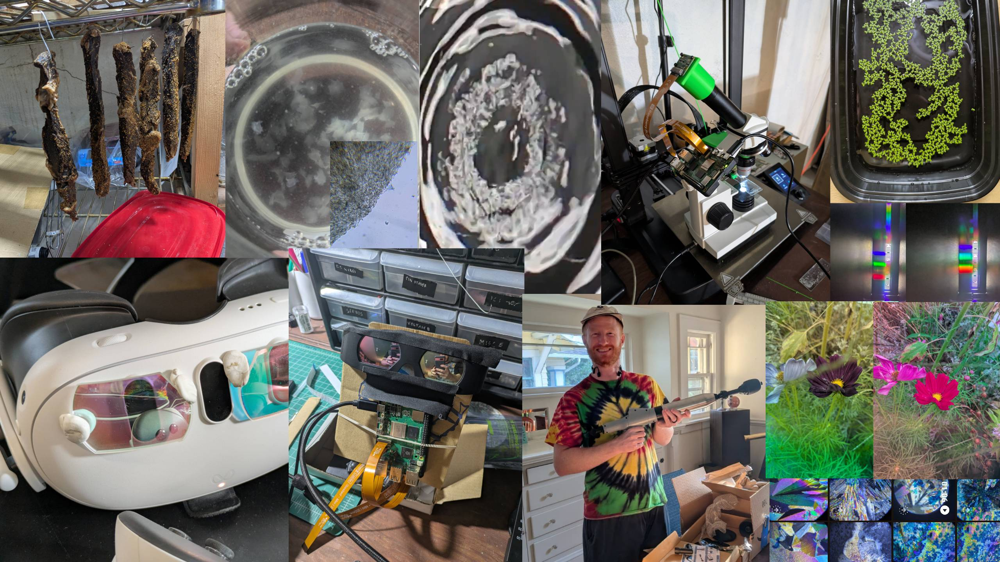

Biltong, Biofilm Flocs, Hyperspectral Glasses, Marangoni Photography, Poop Guns, Slide Scanning and Speedy Duckweed (Misc Updates)
Updates on various small things that don’t justify their own posts just yet.

Biltong
On a recent hiking + bouldering + paddling trip, the topic of backpacking food came up with the sentiment ‘none of it is good’. Which reminded me of a South African staple I’ve been sorely missing here in the US: biltong. A dried meat, far superior to ‘jerky’. Turns out it’s easy to make! With the only downside being that while it’s drying I am continuously tempted by the alluring smell. Here’s my rough recipe:
- Slice up some steak
- Marinate overnight in vinegar, worchesterchire sauce, salt, a little bit of brown sugar/molasses, and spices (pepper, ground corriander seeds, anything else that sounds fun) making sure all is covered
- Hang to dry somewhere with a bit of air circulation. You’re aiming for e.g. 20C with light air movement - too hot or too windy and the outside can harden too much. I use an air purifier to gently waft clean air over it.
It’s done in around 3 days, tasty sliced or just gnawed on, tasty cut thinly and fried if you’re feeling decadent. The corriander and sweet vinegary saltiness is the taste of childhood treats for me.
Biofilm flocs
I noticed these white flakes in the bottom of a bottle of 5g/L hydrponic nutrient (MaxiGro) I had mixed up. They seem to be some kind of biofilm floc. No use for them that I can think of, but they are my pets now until I get around to throwing them out :shrug:
Hyperspectral Glasses
This is a fun side-quest! I learned that you can buy Dolby 3D glasses cheap on eBay which have different notch filters per eye, so they can each eye a different image. You can see the spectra and a representative photo through each eye on the right of the cover image. It’s a fun effect to walk around wearing these things. A lot of stuff looks ~no different, just mildly tinted some color or other. But anything where the color is strongly in a wavelength that hits one eye and not the other ‘shimmers’ in a way that looks like a video game quest marker for real life. Since these are often things like flowers, it’s a neat way to appreciate the world!
I set up a Raspberry Pi 5 with a battery pack and two identical camera modules to try and take some photographs/videos through both filters simultaneously, but the parallax made it not ideas. So I then tried fixing them over the color passthrough cameras on my Quest 3 VR headset and writing a shader that would show the edges/scene from one eye but blend the colors from both eyes in new combinations, to try to give you ‘hyperspectral’ vision. It kinda works but again alignment is tricky, and it’s such a pain accessing the passthrough cameras in Quest at the moment. It seems like they’re planning to give easier access at some point, I might just abandon this and wait for now. My final plan to show off these things to people who don’t have a pair is to capture a scene as a gaussiant splat 3 times - one with a normal camera, and then again with each of the two filters.
It’s so cool to me that some cheap pieces of glass can slice up the visible spectrum, and give us a chance to see more than we can with our measly 3 different cone cell types.
Marangoni Photography and High-Speed Duckweek
I had some duckweed soaking in IPA to extract the chlorophyll, and as I threw it in the sink I noticed some of them zooming around in circles. Here’s a video of this in action from that first test (August 4). They look so alive! I think I can get them to do all sorts of tricks. I’ve been trying to figure out good ways to document the changing surface tension that drives the effect. So far I’ve got some trippy slo-mo but not a technique I’m satisfied with yet.
‘Poop gun’
PSA: if you get this drain unclogger (as we did when a basement sink clogged, although it arrived after the crisis had passed) you are actually buying a small air-cannon, with a pump to fill a chamber with high-pressure air (it claims 100PSI, 60 is easy) and a quick-release trigger. We stuck a barrel on it, it shoots delightfully well :D Don’t tell our landlady about the dent in the drywall until we’ve patched it up! When a curious fly came sniffing around my biltong this gave a satisfying way to dissuade it.
Slide Scanning
I’m improved dramatically over the previous slide scanning setup, with a new plan objective, and a raspberry pi to control the 3D printer and take pictures with the camera module and a 3D printed adapter. The microscope also got an upgraded plan objective. I’ve got these giant scan files with hundreds of images combined into a big mosaic, I’m working on ironing out the final kinks in the process and sharing the resulting images in a satosfying way. This will definitely get its own post at some point.
Other
I’ve been pretty busy with work, and pretty busy outside work with family stuff and outdoors activities. It feels like personal hobby stuff is getting a little neglected, relegated to tiny little things I can sneak in on a Sunday evening. I’ve got plans for more interesting stuff piling up - perhaps as we move into winter I’ll find more time to invest. In the meantime, I hope you, dear hypothetical reader, are enjoying the miscellaneous quick videos and mini-updates such as this :)